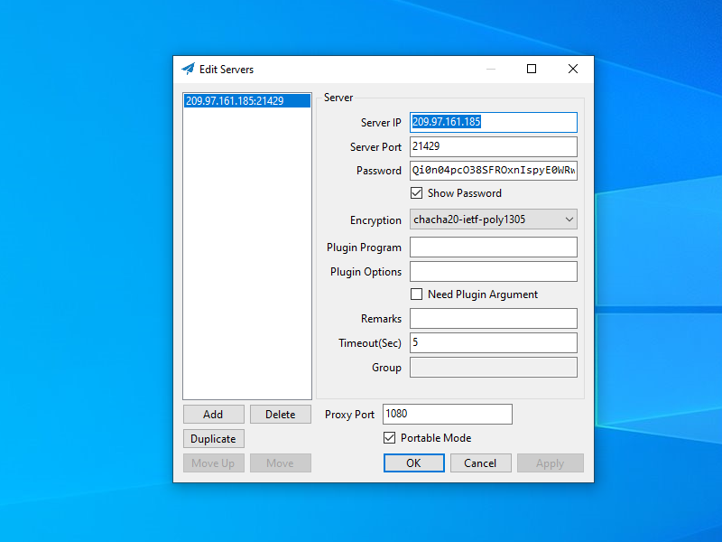

Shadowsocks-Rust on Linux Server and Windows Client
Shadowsocks is an important tool for censorship circumvention. The original Shadowsocks was written in Python. Shadowsocks-Libev was a rewrite in pure C which aimed to keep resource usage as low as possible. However, Shadowsocks-Libev is now receiving bug fixes only.
New development takes place in Shadowsocks-Rust. This is a port of Shadowsocks to Rust, a fast and memory-efficient language designed to power performance-critical services.
The server installation procedure on this page was tested with a virtual private server (VPS) running Ubuntu 21.04, so the process will be similar on recent versions of Debian.
We give instructions for the example of a Windows client, although clients for other platforms are also available.
1. Server
1.1. Generate Port Number and Password
You will need an unusual port number and a strong password for your Shadowsocks server. First generate a random port number like this:
echo $((1024 + $RANDOM))
The shell function RANDOM gives you a pseudo-random integer between 0 and 32767, so after evaluating the arithmetical expression, you will end up with a port number between 1024 and 33791. In our examples on the rest of this page, we will use the result:
21429
Also generate a random password:
openssl rand -base64 24
The openssl rand -base64 function gives you a random number, expressed in base-64 notation. Because of the argument 24, it will be based
on 24 bytes or 192 bits. The result will have 32 base-64 characters. In our examples on the rest of this page, we will use the result:
Qi0n04pcO38SFROxnIspyE0WRwwMjVEf
1.2. Open Firewall
A server firewall is recommended but optional. There are multiple ways to implement a firewall on a Debian/Ubuntu server: nftables, iptables, ufw, and firewalld. We will use nftables in our examples, but you can use another method if you prefer.
SSH into your server as root. Issue each of the following commands in turn to install and start nftables:
apt update && apt upgrade -y
apt install nftables -y
systemctl enable nftables
systemctl start nftables
Configure the firewall to accept related traffic and internal traffic on the loopback interface:
nft add rule inet filter input ct state related,established counter accept
nft add rule inet filter input iif lo counter accept
Configure the firewall to accept ping requests so that you can test latency:
nft add rule inet filter input ip protocol icmp icmp type echo-request counter accept
nft add rule inet filter input ip6 nexthdr icmpv6 icmpv6 type echo-request counter accept
Open port 22 for SSH. If you can restrict the port 22 rule so that only certain source IP addresses are whitelisted for SSH access, then
so much the better. For example, if you always connect to your server from source IP address XX.XX.XX.XX:
nft add rule inet filter input tcp dport 22 ip saddr XX.XX.XX.XX/32 counter accept
If you cannot restrict the port 22 rule, then you will have to open the port to the whole world instead:
nft add rule inet filter input tcp dport 22 counter accept
Open the server for Shadowsocks-Rust TCP input on your chosen port:
nft add rule inet filter input tcp dport 21429 counter accept
Drop all unexpected input:
nft add rule inet filter input counter drop
Save the rules:
nft list ruleset > /etc/nftables.conf
1.3. Install Shadowsocks-Rust Binary
Open a browser on your workstation. Determine the latest release from https://github.com/shadowsocks/shadowsocks-rust/releases. At the time of writing it is release 1.11.1. We will use v1.11.1 in our example
commands. You may need to change this if a later release is available when you run this process.
In your SSH session with the server, download the compressed archive containing the release’s binaries for 64-bit Linux:
wget https://github.com/shadowsocks/shadowsocks-rust/releases/download/v1.11.1/shadowsocks-v1.11.1.x86_64-unknown-linux-gnu.tar.xz
Extract the binaries from the compressed archive:
tar -xf shadowsocks-v1.11.1.x86_64-unknown-linux-gnu.tar.xz
Copy the Shadowsocks server binary into /usr/local/bin:
cp ssserver /usr/local/bin
1.4. Configure Shadowsocks Server
Create a file /etc/shadowsocks-rust.json using your favorite editor. We will use the vi editor as an example.
vi /etc/shadowsocks-rust.json
Insert the following template:
{
"server": "0.0.0.0",
"server_port": 21429,
"password": "Qi0n04pcO38SFROxnIspyE0WRwwMjVEf",
"timeout": 300,
"method": "chacha20-ietf-poly1305",
"mode": "tcp_only",
"fast_open": false
}
Make appropriate changes to the template:
- Change the server port to your preferred value
- Change the password to your preferred value
- Optionally change the encryption method, remembering to use an AEAD cipher
Write the JSON file to disk, and quit the editor.
1.5. Create SystemD Service File
Create a file /usr/lib/systemd/system/shadowsocks-rust.service using your favorite editor. We will use the vi editor as an example.
vi /usr/lib/systemd/system/shadowsocks-rust.service
Insert the following template:
[Unit] Description=shadowsocks-rust service After=network.target [Service] ExecStart=/usr/local/bin/ssserver -c /etc/shadowsocks-rust.json ExecStop=/usr/bin/killall ssserver Restart=always RestartSec=10 StandardOutput=syslog StandardError=syslog SyslogIdentifier=ssserver User=nobody Group=nogroup [Install] WantedBy=multi-user.target
Write the service file to disk, and quit the editor.
1.6. Start Shadowsocks-Rust Server
Start Shadowsocks-Rust after every reboot, and also start it right now:
systemctl enable shadowsocks-rust
systemctl start shadowsocks-rust
Check that Shadowsocks-Rust is active and running:
systemctl status shadowsocks-rust
Check that Shadowsocks-Rust is listening on the expected port, which in our example is port 21429:
ss -tulpn | grep 21429
2. Clients
2.1. Client Availability
Shadowsocks clients are available for Linux, Windows, macOS, Android, iOS, and OpenWRT. The Shadowsocks clients page provides an overview.
We will use Windows in the examples that follow. You can consult the Shadowsocks clients page for information on clients on other platforms.
2.2. Windows C# GUI Client
For simple cases, you can use the old C# GUI client for Windows. Download and unzip the Windows client from GitHub. At the time of writing, this is Shadowsocks-4.4.0.185.zip.
Also download the corresponding hash file. At the time of writing, this is Shadowsocks-4.4.0.185.zip.hash. Open the hash file in a text editor.
In Windows PowerShell on your PC, issue the command:
Get-FileHash -Algorithm SHA512 -Path Downloads\Shadowsocks-4.4.0.185.zip
Make sure that the displayed hash for the zip file matches the expected value in the zip.hash file.
Once you have verified the file hash, unzip the zip file.
Launch the program Shadowsocks.exe. If Windows Defender SmartScreen prevents it from running, then click More info and Run
anyway.
Enter details which match those of the server, and click Apply. The screenshot below gives an example.
Click OK. The Shadowsocks for Windows C# GUI client continues to run in the system tray. The is the area on the right side of the taskbar, toward the bottom right of your Windows desktop. The Shadowsocks icon looks like a paper airplane. Right-click on the Shadowsocks icon to bring up the context menu. The following options appear:
- System Proxy (Disable, PAC, Global)
- Servers (Load balance, High availability, Choose by statistics, Server selection, Edit servers, Statistics config, Share server config, Scan QR code from screen, import URL from clipboard
- PAC (Local PAC, Online PAC, Edit local PAC file, Update local PAC from GFW list, Edit user rule for GFW list, Secure local PAC, Copy local PAC URL, Edit online PAC URL
- Forward proxy...
- Online config...
- Start on Boot
- Associate ss:// Links
- Allow other Devices to connect
- Edit Hotkeys...
- Help (Show logs, Verbose logging, Show plugin output, Write translation template, Update, About
- Quit
Select System Proxy and set the value to Global.
Confirm that the system proxy is on by going to Settings > Network & Internet > Proxy > Manual
proxy setup. It should show that the proxy server toggle is on, for address http://localhost and port 1080.
Check the end-to-end functionality to confirm that Shadowsocks C# GUI and your system proxy settings are configured correctly. Visit one or more of these sites:
In all cases, you should see the IP address of the server, not your local client.
When you are done browsing, quit Shadowsocks from the context menu in the system tray.
2.3. Windows Shadowsocks-Rust Client
You can alternatively install the Shadowsocks-Rust client for Windows. This will give you access to the latest enhanced features.
Determine the latest release from https://github.com/shadowsocks/shadowsocks-rust/releases. At the time of writing it is release 1.11.1. We will use v1.11.1 in our example
commands. You may need to change this if a later release is available when you run this process.
On your PC, download the compressed archive containing the release’s executables for 64-bit Windows, which in our example is
shadowsocks-v1.11.1.x86_64-pc-windows-msvc.zip.
Also download the corresponding hash file. At the time of writing, this is shadowsocks-v1.11.1.x86_64-pc-windows-msvc.zip.sha256. Open the hash file in
a text editor.
In Windows PowerShell on your PC, issue the command:
Get-FileHash -Algorithm SHA256 -Path Downloads\shadowsocks-v1.11.1.x86_64-pc-windows-msvc.zip
Make sure that the displayed hash for the zip file matches the expected value in the zip.sha256 file.
Once you have verified the file hash, unzip the zip file. It contains four executables:
sslocal.exessmanager.exessserver.exessurl.exe
In the same folder as the executables, use a text editor to create a new text file. Insert the template:
{
"server": "my_server_ip",
"server_port": 21429,
"password": "Qi0n04pcO38SFROxnIspyE0WRwwMjVEf",
"method": "chacha20-ietf-poly1305",
"local_address": "127.0.0.1",
"local_port": 1080
}
Make appropriate changes to the template:
- Insert your actual server IP address
- Change the server port to your server value
- Change the password to your server value
- Optionally change the encryption method to match your server
Save the file, in the same folder as the executables, with the name config.json.
Open a Command Prompt window in the folder containing the executables and the configuration JSON file. (You can do this quickly from Windows File Explorer by typing
cmd in the address bar.)
In your Command Prompt window, issue the command:
sslocal.exe -c config.json
Leave the Command Prompt window open, with sslocal.exe running in it.
Open Firefox. From the hamburger menu, select Settings > General. Scroll down to Network Settings. Click the Settings button.
- Select Manual proxy configuration.
- Enter SOCKS Host
127.0.0.1. - Enter Port
1080. - Select SOCKS v5.
- Check Proxy DNS when using SOCKS v5.
- Click OK.
Check the end-to-end functionality to confirm that Shadowsocks-Rust and Firefox are configured correctly. With Shadowsocks-Rust (sslocal.exe) still
running, and Firefox proxied, visit one or more of these sites:
In all cases, you should see the IP address of the server, not your local client. The IP Location site displays geolocation data from four databases (IP2Location, ipinfo.io, DB-IP, and ipdata.co). Note that the four may differ due to timing delays in updating databases.
When you have finished using Shadowsocks, revert Firefox from Manual proxy configuration to Use system proxy settings.
In your Command Prompt window, do Ctrl+c to end the Shadowsocks-Rust (sslocal.exe) process.
3. Get Help and Report Issues
If you have informal questions about Shadowsocks, you can ask on social media platforms such as Reddit.
If you discover an issue with Shadowsocks, report it on the official GitHub issues page for the project:
Updated 2021-06-15